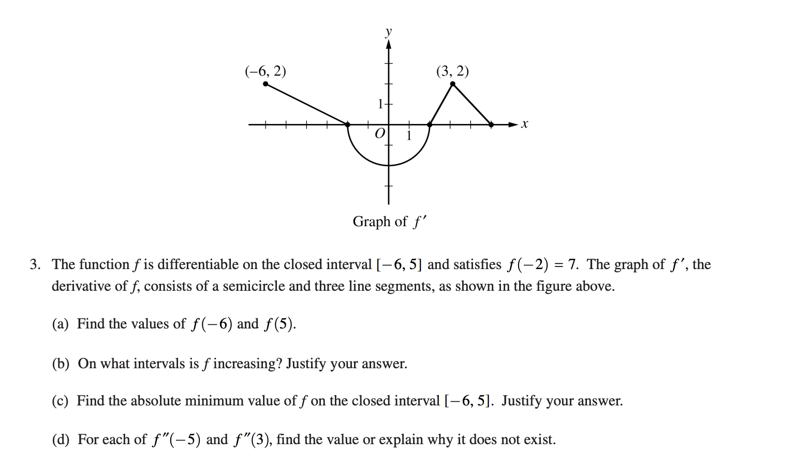
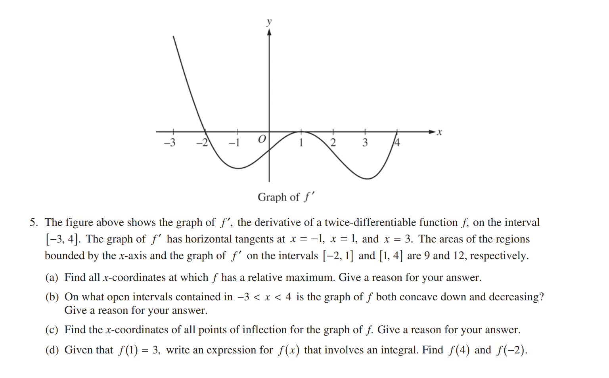

Introduction to Derivatives¶
OBJECTIVES
Review the definition of the derivative
Use the definition to evaluate derivative at a point
Use symbolic rules to evaluate the derivative as a function
Use derivatives to describe the behavior of original function
Apply derivatives to solve problems dealing with particle motion

In mathematics, the derivative of a function of a real variable measures the sensitivity to change of the function value (output value) with respect to a change in its argument (input value). Derivatives are a fundamental tool of calculus. For example, the derivative of the position of a moving object with respect to time is the object’s velocity: this measures how quickly the position of the object changes when time advances. – source
import matplotlib.pyplot as plt
import numpy as np
import pandas as pd
import ipywidgets as widgets
from ipywidgets import IntSlider, FloatSlider
Derivative: A Definition¶
Derivatives were motivated by the formula for the slope of a line. The image below demonstrates how we consider a point \(x\) and a second point distance \(h\) away from \(x\).

\(\text{Difference Quotient}: \displaystyle m={\frac {\Delta f(a)}{\Delta a}}={\frac {f(a+h)-f(a)}{(a+h)-(a)}}={\frac {f(a+h)-f(a)}{h}}.\)
To find the slope of the tangent line, we let this distance between the points approach zero.

\(\text{Using the limit:} ~{\displaystyle f'(a)=\lim _{h\to 0}{\frac {f(a+h)-f(a)}{h}}.}\)
To reiterate, a result of this is a single value that represents the slope of the tangent line at \(x = a\).
EXAMPLE¶
Suppose we have \(f(x) = x^2\) and we want the slope of the tangent line at \(x = 1\):
\(\text{Difference Quotient}: \frac{f(1 + h) - f(1)}{h}\)
\(\text{Plug into our function} ~ f: \quad \frac{(1 + h)^2 - (1)^2}{h}\)
\(\text{Simplify:} \quad \frac{1 + 2h + h^2 - 1}{h}\)
\(\text{Cancel 1's and factor} \quad \frac{h(2 + h)}{h}\)
\(f'(1) = 2 + h\)
\(\text{Evaluate limit}: \quad \lim_{h \to 0} 2 + h = 2\)
As a result of our work, we now know the slope of the line tangent to the function \(f(x) = x^2\) at \(x = 1\) is 2.
QUESTIONS
Repeat for \(x = 0\)
Consider the function \(f(x) = (x - 2)^2 + 3\).
Plot the function.
Determine the slope of the line tangent to \(f\) at \(x = 2\), and \(x = 3\).
Write the equation for the tangent line and plot this alongside the original function.
Notation and Rules¶
The derivative of a function \(f\) is typically written as \(f'\). If the independent variable is \(x\) and dependent \(y\), an equivalent expression would be written \(\frac{dy}{dx}\). Additionally, we have some straightforward rules for finding the derivative of different kinds of functions. Below are the most basic rules, for a larger list see link:
Polynomial Functions: \(f(x) = x^n \quad f'(x) = nx^{n-1}\)
Trignometric Functions: \(\frac{d}{dx}\sin(x) = \cos(x) \quad \frac{d}{dx}\cos(x) = -\sin(x)\)
Exponential Functions: \(f(x) = e^x \quad f'(x) = e^x\)
Examples
\(f(x) = 3x^4 - 3x \rightarrow f'(x) = 12x^3 - 3\)
\(g(x) = 5\sin(x) \rightarrow g'(x) = 5\cos(x)\)
\(h(x) = 2x^3 + 4\cos(x) + e^x \rightarrow h'(x) = 6x^2 - 4\sin(x) + e^x\)
PRACTICE
Find the derivative of the following functions using our rules from above.
\(f(x) = x^{12}\)
\(g(x) = 4x^3 - 2x\)
\(h(x) = 3\sin(x) + 2e^x\)
Interpretation: Instantaneous Rate of Change¶
A typical application of derivatives is to problems involving objects in motion, and their rate of change. Specifically, we have relationships between displacement, velocity, and acceleration. If we recognize the derivative as capturing the notion of the instantaneous rate of change, we have that:
velocity \(\rightarrow\) derivative of displacement
acceleration \(\rightarrow\) derivative of velocity
EXAMPLE
A particle moves along the \(x\)-axis where positive direction is to the right and negative left. The position of the particle at time \(t\) is given by \(s(t) = t^3 - 4t + 2\).
Find the derivative of \(s(t)\) which represents the velocity function \(v(t)\).
Use \(v(t)\) to deterime if the particle is moving to the left or right at \(t = 1\)?
Find the derivative of \(v(t)\) which represents the acceleration of a particle \(a(t)\).
Use \(a(t)\) to determine if the particle is speeding up or slowing down at \(t = 1\)
A Function and its Derivative¶
Let \(f(x) = x^5 + 2x^4 - x^3 - 2x^2\).
a. Find \(f'(x)\) and plot on [-2.5, 1.5].
b. Over what intervals does the graph of \(f\) appear to be rising as you move left to right?
c. Over what intervals does the graph of \(f'\) appear to be able the \(x\)-axis?
d. Over what intervals does the graph of \(f\) appear to be falling as you move from left to right?
e. Over what intervals does the graph of \(f'\) appear to be below the x-axis?
f. What are the \(x\)-coordinates of all the high points and low points of the graph of \(f\)?
g. For what value of \(x\) does the graph of \(f'\) appear to meet the \(x\)-axis?
Repeat for \(y = \frac{x}{1 + x^2}\).
On the basis of these examples, write a statement that relates where a function is rising, is falling, and has a high point or low point to properties you observed about the graph of its derivative.
PROBLEM: AP Calculus 2017 Free Response 3¶

Problem: AP Calculus 2015 Free Response 5¶

Up Next¶
Examine more complex rules for functions with products and quotients of functions
Use second derivative to explore concavity